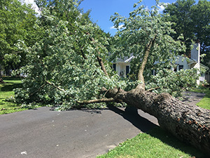

As hurricane season approaches and strong autumn winds start sweeping through New Jersey, preparing your property for potential storms becomes a top priority. One of the most effective ways to safeguard your home and yard is by addressing the health and stability of your trees. Early fall is an ideal time to call in a professional tree company to assess, prune, and strengthen your trees before the harsh weather arrives. By providing proactive tree service in Smithville and elsewhere around the state, such as removing dead branches, identifying potential hazards, and bracing weak limbs, tree experts can help reduce the risk of storm damage, ensuring that your landscape is ready to withstand whatever Mother Nature brings.
Why Is Storm Preparation for Trees So Important?

Storm preparation for trees is crucial to protecting both your property and the health of your landscape. Trees with weak branches, dead limbs, or unstable root systems become dangerous liabilities during severe weather. High winds, heavy rain, and even snowstorms can cause these trees to snap, uproot, or fall, leading to costly damage to homes, vehicles, and other structures. Additionally, fallen trees can block roads, knock out power lines, and create hazardous conditions in your yard.Beyond the immediate safety risks, unprepared trees are more susceptible to long-term damage. A storm can strip away foliage, break branches, and leave a tree vulnerable to disease or pest infestations. By addressing these issues before a storm hits, a tree company can help you prevent not only property damage but also the potential loss of valuable, mature trees. Proper storm prep ensures that your trees stay healthy, safe, and resilient, reducing the chance of costly repairs or emergency tree removal after a storm.
How Tree Companies Protect Trees Before Fall and Winter Storms
Before fall and winter storms hit, professional tree companies play a critical role in safeguarding your landscape. Their storm preparation services are designed to minimize potential hazards while ensuring the health and stability of your trees.
Tree Inspection and Risk Assessment
Tree experts start by inspecting your property to identify any trees or limbs that pose a risk during storms. They look for weak or dead branches, signs of decay or disease, and any structural weaknesses that could cause the tree to fail in high winds or heavy snow.
Pruning and Trimming
One of the most effective ways to prepare trees for storms is through strategic pruning. Tree companies remove dead, diseased, or overgrown branches to reduce the tree’s wind resistance and the risk of breakage. They also shape trees to create a balanced structure, which can withstand the forces of strong winds.
Cabling and Bracing
For trees that have significant structural issues, such as weak limbs or split trunks, tree companies may install cables or braces. These supports help reinforce vulnerable trees, preventing major limbs from breaking during storms and giving trees an extra layer of stability.
Removing Hazardous Trees
In some cases, a tree may be too damaged or unstable to safely withstand an upcoming storm. Tree companies can safely remove hazardous trees before they become a threat to your property or surrounding areas. Early removal reduces the risk of emergency situations during or after a storm.
Root and Soil Care
Strong, healthy roots are essential for trees to remain grounded during storms. Tree companies can assess the soil and root conditions around your trees, providing treatments to strengthen the root system, prevent erosion, and improve overall stability. In some cases, root barriers or soil aeration may be recommended to encourage healthier root growth.
By addressing these key areas, tree companies ensure your trees are better equipped to handle the heavy winds, rain, and snow that often come with fall and winter hurricanes. Proactive care can make all the difference in protecting both your trees and your property.
Contact Us for Tree service in Smithville Now
In the face of unpredictable fall and winter storms, taking proactive steps to protect your trees is essential for ensuring the safety of your property and preserving the health of your landscape. By contacting Ben Bivins Tree Experts early in the season for tree service in Smithville, you can address potential hazards, fortify vulnerable trees, and minimize the risk of costly damage. Whether it’s through pruning, cabling, or strategic tree removal, we offer the knowledge and tools needed to prepare your trees for the harsh weather ahead. Don’t wait until it’s too late—reach out today to get your property storm-ready and enjoy peace of mind this season.